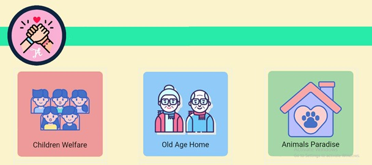
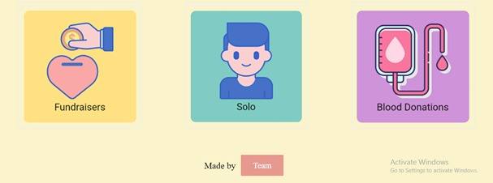

GitHub Repo
Open Site
About : Trishanya is a non-profit online donation platform which aims to
channel and provide resources to credible non-governmental organisations
across India. As a web portal, it helps raise funds and contributions from
individuals across India and the world and then disburses these donations
to credible Indian NGOs.
Idea: This platform helps the people in finding various social causes which require most attention at that time. Also, people willing to donate can filter their searches with respect to a particular cause. This platform keeps the track of the amount donated by each donor and shows his or her share in making lives of the people better, which further motivates the donor to donate and spread awareness in public about it.
How it works: Trishanya does not undertake any charitable functions directly. Instead, it channels funds provided by donors to certified non-profit organizations across India. Non-profit organizations who wish to partner with Trishanya need to satisfy a minimum set of conditions known as "credibility alliance norms." Among other criteria, organizations must have no political ties and at least fifty percent of their beneficiaries must be economically underprivileged. Donors visit Trishanya website and donate online to their preferred Indian NGOs and the donations are then disbursed to those NGOs.
Motive: Our motive is to make it easier for people to search for reliable NGOs where they can donate for the betterment of the society. Also, we aim to improve the condition of our country so that we can contribute towards the success and growth of our country.